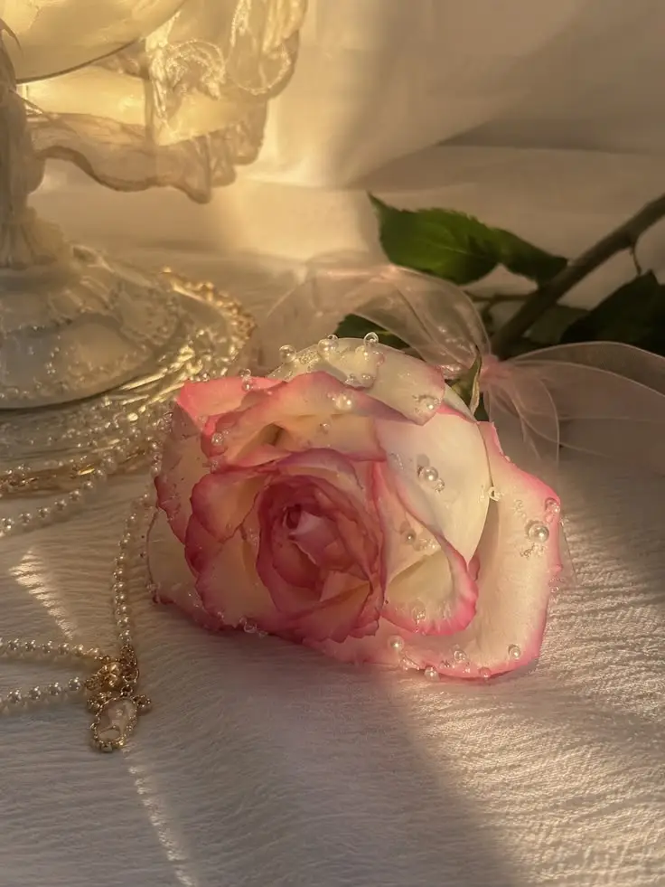
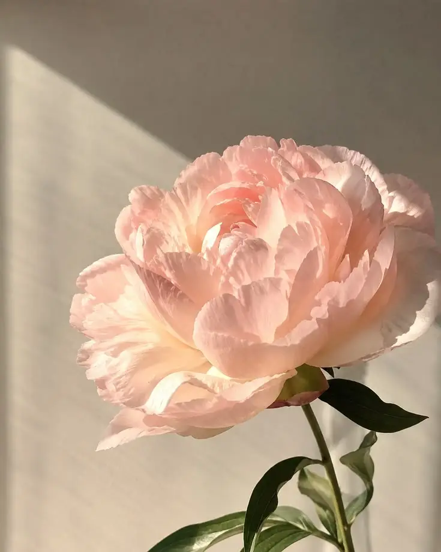

Love & Romance
Discover flowers often chosen to express affection, devotion, and admiration.
Explore romanceA little meaning in every bloom
Discover the quiet language of flowers. From a simple thank-you to a heartfelt declaration of love, find the bloom that says what words sometimes cannot.

More than a pretty bloom
Explore traditional meanings and find a thoughtful way to celebrate the people and moments that matter.
Discover flowers often chosen to express affection, devotion, and admiration.
Explore romanceFind blooms that can celebrate loyalty, joy, and the beauty of connection.
Explore friendshipSay thank you with a meaningful flower and a message from the heart.
Explore gratitudeA few garden favorites
Every flower has a history. These are a few lovely places to begin.

Love and devotion
A timeless symbol of affection, admiration, and heartfelt connection.
Discover its meaning →Perfect love
A graceful bloom often associated with sincere love and fresh beginnings.
Discover its meaning →
Prosperity and good fortune
A romantic flower often connected with abundance and joyful celebrations.
Discover its meaning →Make it personal
Choose an occasion to start exploring your own floral message.